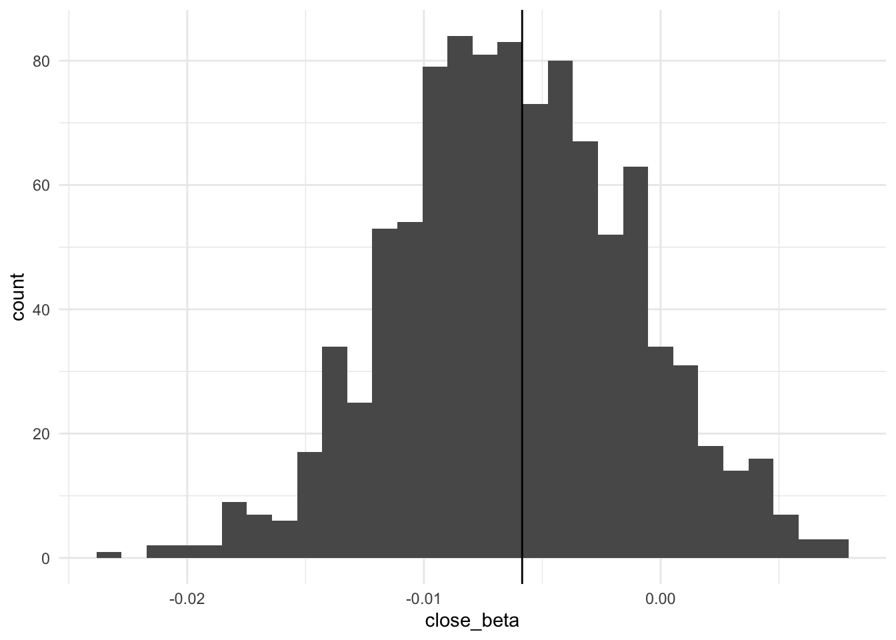

library(tidyverse)
library(broom)
library(gtsummary)
library(skimr)
library(mvtnorm)
library(fastDummies)Measuring Substantive Effects on Binary Outcomes
Set up
This section uses the following packages:
We will use the dataset we set up in the previous section:
vote close edu7cat homeown
1 Voted 10 6 Homeowner
2 Voted 29 6 Homeowner
3 Voted 28 4 Homeowner
4 Voted 0 5 Homeowner
5 Voted 25 7 Not homeowner
6 Voted 25 5 Not homeownerIntroduction
Previously, we explored the effect of a one-unit change in our predictor on our outcome. A more interesting question focuses not on a one-unit change, but rather a theoretically- or policy-relevant change in our predictor. For example, let’s say that a state’s legislature is considering how they can increase participation in federal and state elections. They are considering changing their election registration rules to allow individuals to register on election day. Currently, individuals must register at least 20 days prior to election day to be able to vote in that election. What is the effect on individuals’ predicted likelihood of voting of changing the date of voting registration from 20 days prior to election day to election day? This section will outline how we calculate this substantive effect for binary outcomes.
As discussed in the previous section, the effect of a change in \(x\) on the predicted probability of success depends on your values of \(x\). Unlike linear models, the effect of a one unit change in \(x\) on the predicted probability of success is not constant.
Measuring substantive effects
How do we actually measure the effect of a change from \(x_{i1}\) to \(x_{i2}\)? We predict the estimated probability of success at \(x_{i1}\) and at \(x_{i2}\) and subtract those probabilities from one another to get the difference. Simple, right?
However, there are two factors that complicate this process. First, we need to deal with the other variables in our model: what values should they be held at while we change our variable of interest, \(x_i\)? Second, how do we measure uncertainty surrounding this estimated effect? We will deal with these challenges in turn.
What to do with the other independent variables
There are two dominant approaches to solving this challenge: the average case approach and the observed value approach.
Average case approach
This approach sets all other values to their mean (for continuous variables) or mode (for discrete variables).
Find the mean or mode for all independent variables other than your variable of interest.
Find your predicted probability of success with your first value of \(x_i\), holding all other variables at their mean or mode.
Find your predicted probability of success with your second value of \(x_i\), holding all other variables at their mean or mode.
Calculate the difference between these predicted probabilities.
Discuss the substantive significance of this difference.
To illustrate, let’s explore the predicted effect of changing a state’s registration voting date from 20 days prior to election day (\(close = 20\)) to election day (\(close = 0\)).
First, let’s fit a logistic regression as we did in the previous section. Here we will include our controls: edu7cat and homeown.
m1 <- glm(vote ~ close + edu7cat + homeown, data = voters, family = binomial(link = "logit"))
tbl_regression(m1, intercept = T, exponentiate = T)| Characteristic | OR1 | 95% CI1 | p-value |
|---|---|---|---|
| (Intercept) | 0.45 | 0.11, 1.56 | 0.2 |
| Registration closing | 0.99 | 0.98, 1.00 | 0.2 |
| Education level | |||
| 1 | — | — | |
| 2 | 1.59 | 0.43, 6.60 | 0.5 |
| 3 | 1.24 | 0.35, 4.96 | 0.7 |
| 4 | 1.66 | 0.48, 6.54 | 0.4 |
| 5 | 3.46 | 1.00, 13.6 | 0.055 |
| 6 | 6.86 | 1.95, 27.4 | 0.003 |
| 7 | 9.13 | 2.49, 38.0 | 0.001 |
| Homeownership | |||
| Not homeowner | — | — | |
| Homeowner | 2.28 | 1.85, 2.83 | <0.001 |
| 1 OR = Odds Ratio, CI = Confidence Interval | |||
Now, we create a new dataset that contains the values for close we want to test and sets the other independent variables to their mean or mode values:
new_data <- tibble(
close = c(0, 20),
edu7cat = voters |> count(edu7cat) |> filter(n == max(n)) |> pull(edu7cat),
homeown = voters |> count(homeown) |> filter(n == max(n)) |> pull(homeown)
)
new_data# A tibble: 2 × 3
close edu7cat homeown
<dbl> <fct> <fct>
1 0 4 Homeowner
2 20 4 HomeownerNext, we calculate the predicted probability that an individual will vote, given these values for our independent variables:
result_av <- augment(m1, newdata = new_data, type.predict = "response")
result_av# A tibble: 2 × 4
close edu7cat homeown .fitted
<dbl> <fct> <fct> <dbl>
1 0 4 Homeowner 0.629
2 20 4 Homeowner 0.601Next, we calculate the difference between these predicted probabilities, noting that the only thing that changed in our model is the value of close:
result_av <- mutate(result_av, diff = .fitted - lead(.fitted))
result_av# A tibble: 2 × 5
close edu7cat homeown .fitted diff
<dbl> <fct> <fct> <dbl> <dbl>
1 0 4 Homeowner 0.629 0.0277
2 20 4 Homeowner 0.601 NA We predict that the probability that an individual will vote increases 2.77 percentage points when a state’s closing date for voter registration moves from 20 days prior to election day to election day. If our legislature thinks that is a worthwhile increase in turnout, this is a substantively significant result.1
However, we have a bit of a problem. Is this really a generalisable result? Haven’t we just estimated the effect of this change in registration day closure for a homeowner with an education level of 4? This is the problem with the average case approach: we are discarding an enormous amount of data from our sample which is potentially compromising the generalisability of our predictions. In fact, sometimes our average case isn’t even in our dataset, which means that we are making out-of-sample predictions.
Observed value approach
The observed value approach addresses this issue. It sets all other independent variables to their observed values, only aggregating the estimated effect at the end.
Find your predicted probability of success with your first value of \(x_i\), holding all other variables at their observed values. You will get the same number of predictions as you have observations.
Find your predicted probability of success with your second value of \(x_i\), holding all other variables at their observed values.
Calculate the average predicted probability for each of these values of \(x_i\).
Calculate the difference between these averages.
Discuss the substantive significance of this difference.
Let’s explore the same question as above to illustrate.
First, find the predicted probability of an individual voting when \(close = 20\):
result_20 <- augment(m1, newdata = mutate(voters, close = 20), type.predict = "response")
result_20# A tibble: 2,188 × 5
vote close edu7cat homeown .fitted
<fct> <dbl> <fct> <fct> <dbl>
1 Voted 20 6 Homeowner 0.861
2 Voted 20 6 Homeowner 0.861
3 Voted 20 4 Homeowner 0.601
4 Voted 20 5 Homeowner 0.758
5 Voted 20 7 Not homeowner 0.784
6 Voted 20 5 Not homeowner 0.579
7 Voted 20 7 Homeowner 0.892
8 Voted 20 6 Homeowner 0.861
9 Voted 20 2 Homeowner 0.590
10 Did not vote 20 5 Homeowner 0.758
# … with 2,178 more rowsNext, find the predicted probability of an individual voting when \(close = 0\):
result_0 <- augment(m1, newdata = mutate(voters, close = 0), type.predict = "response")
result_0# A tibble: 2,188 × 5
vote close edu7cat homeown .fitted
<fct> <dbl> <fct> <fct> <dbl>
1 Voted 0 6 Homeowner 0.875
2 Voted 0 6 Homeowner 0.875
3 Voted 0 4 Homeowner 0.629
4 Voted 0 5 Homeowner 0.779
5 Voted 0 7 Not homeowner 0.803
6 Voted 0 5 Not homeowner 0.607
7 Voted 0 7 Homeowner 0.903
8 Voted 0 6 Homeowner 0.875
9 Voted 0 2 Homeowner 0.618
10 Did not vote 0 5 Homeowner 0.779
# … with 2,178 more rowsNext, calculate the average predicted probability for \(close = 20\) and \(close = 0\):
result_ov <- result_0 |>
bind_rows(result_20) |>
group_by(close) |>
summarise(.fitted = mean(.fitted)) |>
mutate(diff = .fitted - lead(.fitted))
result_ov# A tibble: 2 × 3
close .fitted diff
<dbl> <dbl> <dbl>
1 0 0.688 0.0228
2 20 0.666 NA We expect that the probability that an individual will vote increases 2.28 percentage points when a state’s closing date for voter registration moves from 20 days prior to election day to election day. If our legislature thinks that is a worthwhile increase in turnout, this is a substantively significant result.2
Which approach should you use?
You should use the observed values approach. Hanmer and Kalkan (2013) demonstrate using simulated data that the observed values approach consistently produces estimates closer to the population’s true probability than the average case approach. This makes sense: you are using more data to produce your estimated effects.
Measuring uncertainty when calculating substantive effects
We calculated these estimates using a model that includes error. We need to understand how this uncertainty impacts our estimated substantive effects. How do we get confidence intervals around our estimated effects?
Imagine we are trying to estimate the relationship between some binary outcome \(Y\) and some independent variables \(X\) and \(Z\). We take a representative sample from our population and fit a model against that data. If we were to take a different representative sample from our population and fit the same model to that data, we will probably get slightly different estimates for our \(\beta\)s. This is because of the random error inherent in modelling observed data. We can make some useful assumptions about the distribution of these difference errors produced by these different samples.
These assumptions depend on whether you are using logistic or probit regression, but the theory is the same. If we were to take many, many, many (say, 1,000) different representative samples from our population and fit many, many, many different models, we would get a set of \(\beta\) estimates that follow either a normal (for probit) or inverse logistic (for logit) distribution. Your original estimated \(\beta\) will be within this distribution.
We can use this to generate our confidence intervals. We just need to simulate fitting these 1,000 different models.
It is critical that your sample is representative of your population. We are not simulating drawing 1,000 different samples. Rather, we are taking our one model fitted against our one sample and drawing estimates around those \(\beta\)s.
Simulate fitting 1,000 different models by drawing 1,000 different \(\beta_i\) around your estimated \(\beta_i\) following your (logistic or probit) model’s distribution.
Predict the probability of success for \(x_{i1}\) and \(x_{i2}\) using these 1,000 different model estimates.
Calculate the difference between those predictions.
Calculate the lower and upper confidence intervals and the mean of those differences.
Let’s illustrate this by looking at our question above.
Recall our logistic regression model from above:
tbl_regression(m1, intercept = T, exponentiate = T)| Characteristic | OR1 | 95% CI1 | p-value |
|---|---|---|---|
| (Intercept) | 0.45 | 0.11, 1.56 | 0.2 |
| Registration closing | 0.99 | 0.98, 1.00 | 0.2 |
| Education level | |||
| 1 | — | — | |
| 2 | 1.59 | 0.43, 6.60 | 0.5 |
| 3 | 1.24 | 0.35, 4.96 | 0.7 |
| 4 | 1.66 | 0.48, 6.54 | 0.4 |
| 5 | 3.46 | 1.00, 13.6 | 0.055 |
| 6 | 6.86 | 1.95, 27.4 | 0.003 |
| 7 | 9.13 | 2.49, 38.0 | 0.001 |
| Homeownership | |||
| Not homeowner | — | — | |
| Homeowner | 2.28 | 1.85, 2.83 | <0.001 |
| 1 OR = Odds Ratio, CI = Confidence Interval | |||
Let’s collect those coefficients using broom::tidy():
coefs <- tidy(m1) |> pull(estimate)
coefs[1] -0.80698206 -0.00585002 0.46146385 0.21142686 0.50831506 1.24130230
[7] 1.92500744 2.21140696 0.82613712Next, simulate fitting 1,000 different models using these estimates as our center-point using mvtnorm::rmvnorm():
TODO: Learn more about the sigma.
coefs_sim <- rmvnorm(n = 1000, mean = coefs, sigma = vcov(m1)) |>
as_tibble() |>
set_names(tidy(m1) |> mutate(term = paste0(term, "_beta")) |> pull(term))
head(coefs_sim)# A tibble: 6 × 9
(Intercept)…¹ close_…² edu7c…³ edu7c…⁴ edu7c…⁵ edu7c…⁶ edu7c…⁷ edu7c…⁸ homeo…⁹
<dbl> <dbl> <dbl> <dbl> <dbl> <dbl> <dbl> <dbl> <dbl>
1 -0.675 -0.00670 0.430 0.0530 0.631 1.27 1.93 1.99 0.722
2 -1.51 -0.00357 1.15 0.665 1.23 1.83 2.79 2.96 0.828
3 -1.05 -0.0197 0.814 0.918 1.03 1.87 2.57 2.85 0.813
4 0.000780 -0.00971 -0.0890 -0.656 -0.304 0.499 1.29 1.20 0.908
5 -1.54 -0.0143 1.59 0.955 1.48 2.18 2.87 3.31 0.920
6 -0.875 -0.00388 0.348 0.282 0.514 1.23 2.05 2.00 0.871
# … with abbreviated variable names ¹`(Intercept)_beta`, ²close_beta,
# ³edu7cat2_beta, ⁴edu7cat3_beta, ⁵edu7cat4_beta, ⁶edu7cat5_beta,
# ⁷edu7cat6_beta, ⁸edu7cat7_beta, ⁹homeownHomeowner_betaLet’s look at the distribution of these simulated \(\beta\)s for one of our variables: close:
ggplot(coefs_sim, aes(x = close_beta)) +
geom_histogram() +
geom_vline(xintercept = tidy(m1) |> filter(term == "close") |> pull(estimate)) +
theme_minimal()
This draw follows the inverse logit distribution and centered around our estimated \(\beta_{close}\) (highlighted by the black line).
Next, we need to predict the probability that an individual will vote when \(close = 20\) and when \(close = 0\) using these 1,000 different model estimates. To do this, we need to convert our categorical variables into dummy variables so that we can fit the correct \(\beta\)s to them.
We can use fastDummies::dummy_col() to do this:
trans_data <- voters |>
dummy_cols(select_columns = "edu7cat", remove_first_dummy = TRUE) |>
mutate(homeown = as.integer(homeown))
head(trans_data) vote close edu7cat homeown edu7cat_2 edu7cat_3 edu7cat_4 edu7cat_5 edu7cat_6
1 Voted 10 6 2 0 0 0 0 1
2 Voted 29 6 2 0 0 0 0 1
3 Voted 28 4 2 0 0 1 0 0
4 Voted 0 5 2 0 0 0 1 0
5 Voted 25 7 1 0 0 0 0 0
6 Voted 25 5 1 0 0 0 1 0
edu7cat_7
1 0
2 0
3 0
4 0
5 1
6 0\(edu7cat = 1\) is our reference category. We can remove it because it is not directly included in our model.
Now, we include our close variable, set to 0 and 20 for each of these 2,188 observations. We should get a dataset of length 4,376: one set of observations for \(close = 20\) and one set for \(close = 0\).
new_data <- trans_data |>
mutate(close = 0) |>
bind_rows(mutate(trans_data, close = 20)) |>
group_by(close) |>
mutate(id = row_number()) |>
ungroup()
nrow(new_data)[1] 4376Next, we need to join our datasets together, so we can calculate our predicted probability for each observation for each simulated model coefficient. We should get a dataframe with a length of 2 x 1,000 x 2,188 (number of different variables of interest x number of models x number of observations).
sim_data <- coefs_sim |>
mutate(sim_round = row_number()) |>
full_join(new_data, by = character())
nrow(sim_data)[1] 4376000We can now estimate our logistic regression model using the 1,000 different estimated \(\beta\)s for all 2,188 different observations. You need to first fit the linear model, then find the inverse logit of those results using plogis().
results <- sim_data |>
mutate(
.fitted = `(Intercept)_beta` +
close_beta * close +
edu7cat2_beta * edu7cat_2 +
edu7cat3_beta * edu7cat_3 +
edu7cat4_beta * edu7cat_4 +
edu7cat5_beta * edu7cat_5 +
edu7cat6_beta * edu7cat_6 +
edu7cat7_beta * edu7cat_7 +
homeownHomeowner_beta * homeown,
.fitted = plogis(.fitted)
) |>
arrange(sim_round, id, close)We then calculate the difference between the predicted probabilities for each observation when \(close = 0\) and \(close = 20\):
results |>
group_by(sim_round, id) |>
mutate(diff = (.fitted - lead(.fitted)) * 100) |>
drop_na(diff) |>
ungroup() |>
summarise(`Lower bound` = quantile(diff, 0.025),
`Mean` = quantile(diff, 0.5),
`Upper bound` = quantile(diff, 0.975))# A tibble: 1 × 3
`Lower bound` Mean `Upper bound`
<dbl> <dbl> <dbl>
1 -1.31 1.29 5.24This simulated result is very close to the difference we calculated using both the average case (2.77 percentage points) and observed value (2.28) approaches. But now we have a confidence interval around this estimate. Because this confidence interval crosses through 0, we cannot reject the null hypothesis that this substantive effect is caused by random error.